LOOK360 · 360 작업실 · 비교 샘플
🔇 노이즈 줄이기
✨ 샤픈 비교
RAW(NEF) 한 장 · 톤 「정보성 VR」(그늘 살리기) 기준
마트 입구 ISO 800 · 지하주차장 ISO 1600 · 호텔 로비 ISO 2200
2026-10-24 · ←/→ 넘기기 · 비교 화면에서 숫자키 1~6 으로 방식 바꾸기 · F 전체화면
비교한 방식 6가지
| ① 없음 | 톤(정보성 VR)만 — 그늘을 올린 만큼 노이즈도 올라온 상태 |
| ② LibRaw | NEF 현상 단계의 FBDD + 웨이블릿(약하게). 가볍게 줄지만 효과가 작음 |
| ③ 색 · 가는 입자 | 🎨 밝기는 그대로, 그늘의 색 얼룩만 (반경 12px) — 장당 ~2초 |
| ④ 색 · 굵은 입자 | 🎨 굵은 얼룩까지 녹임 (반경 48px) — 밝은 간판 색은 보호 · 장당 ~2초 |
| ⑤ AI | 🤖 SCUNet(로컬 GPU) — 밝기 알갱이까지 걷음 · 36MP 장당 ~48초 |
| ⑥ AI+색(굵게) | 🤖 다음 🎨 굵게 — AI가 남긴 색 얼룩까지 |
모두 사진 한 장씩 (스티칭 전) · 원본 NEF 는 그대로 · 시간은 36MP 한 장 기준 (RTX 3060)
📷 마트 입구 · ISO 800
4924×7378 · 장당 시간(초): 현상+톤 50.6 · LibRaw 59.2 · 색 1.6 · AI 48.4
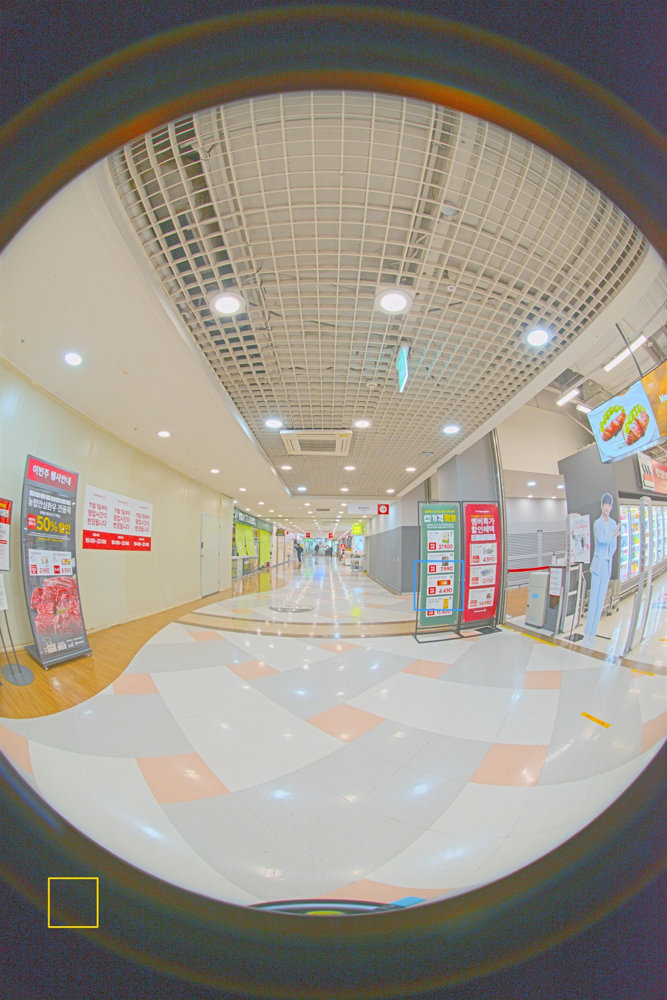
노란 상자 = 어두운 곳(노이즈) · 파란 상자 = 디테일(글씨·모서리) — 다음 장부터 100% 확대 비교
🔇 어두운 곳 (노이즈)
마트 입구 · ISO 800 · 노이즈 6가지
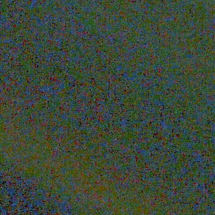
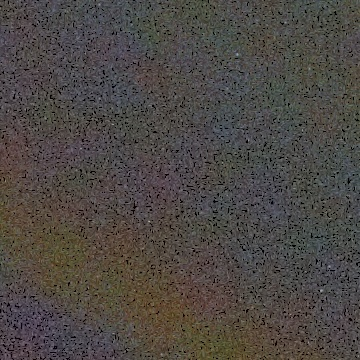
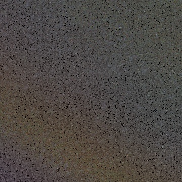
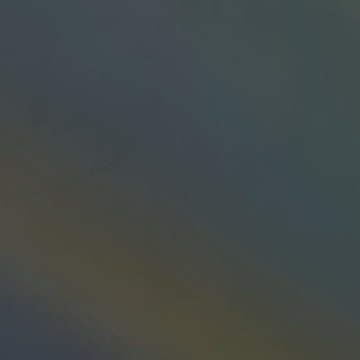
🔇 디테일 (글씨·모서리)
마트 입구 · ISO 800 · 노이즈 6가지
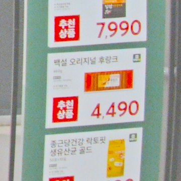
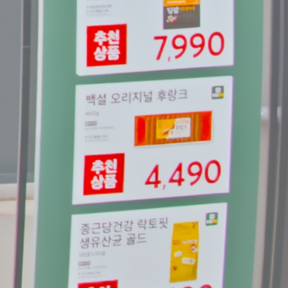

✨ 어두운 곳 (노이즈)
마트 입구 · ISO 800 · 샤픈 (⑥ 기준) + 노이즈 그대로 샤픈

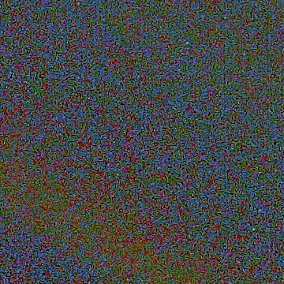
✨ 디테일 (글씨·모서리)
마트 입구 · ISO 800 · 샤픈 (⑥ 기준) + 노이즈 그대로 샤픈
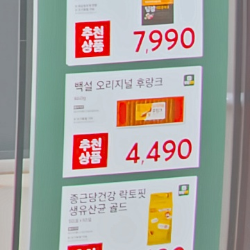
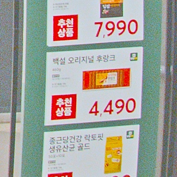
📷 마트 지하주차장 · ISO 1600
4924×7378 · 장당 시간(초): 현상+톤 46.6 · LibRaw 54.4 · 색 1.4 · AI 46.1
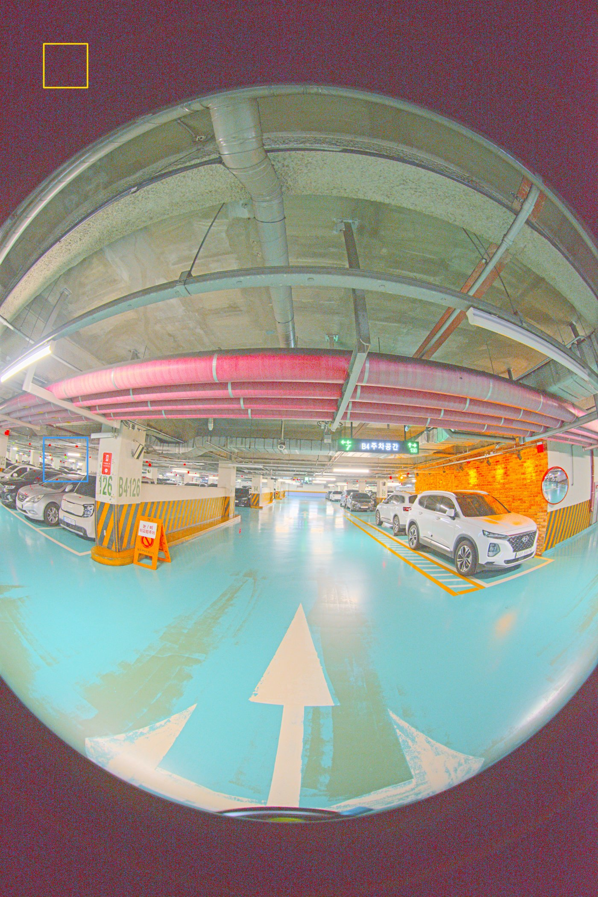
노란 상자 = 어두운 곳(노이즈) · 파란 상자 = 디테일(글씨·모서리) — 다음 장부터 100% 확대 비교
🔇 어두운 곳 (노이즈)
마트 지하주차장 · ISO 1600 · 노이즈 6가지
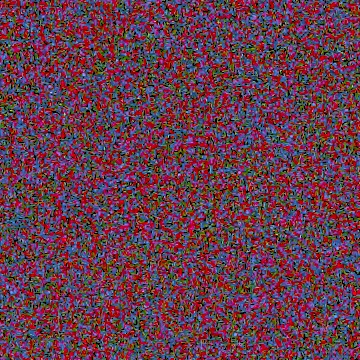
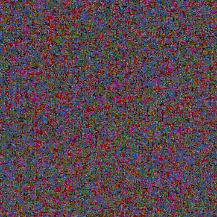
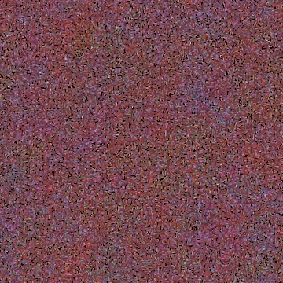
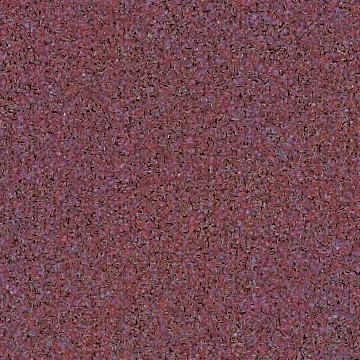
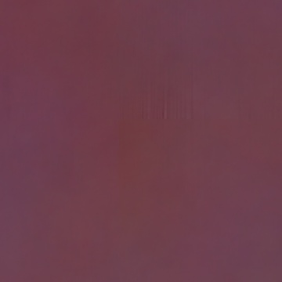

🔇 디테일 (글씨·모서리)
마트 지하주차장 · ISO 1600 · 노이즈 6가지
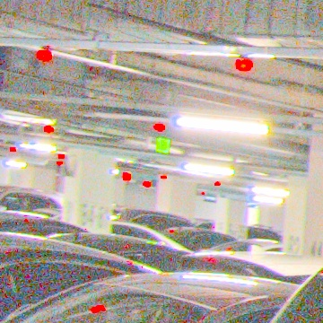
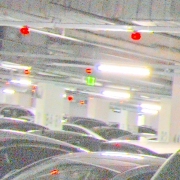
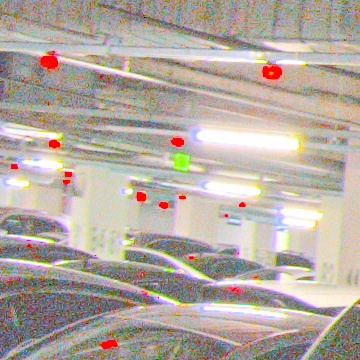
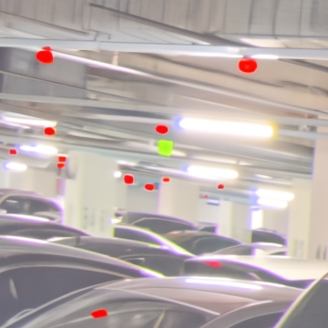
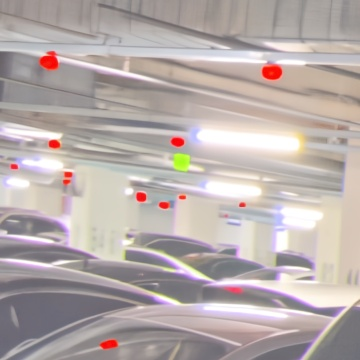
✨ 어두운 곳 (노이즈)
마트 지하주차장 · ISO 1600 · 샤픈 (⑥ 기준) + 노이즈 그대로 샤픈
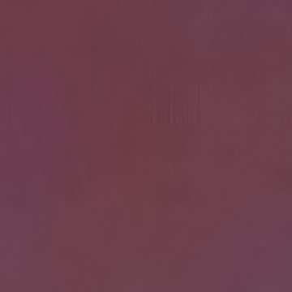
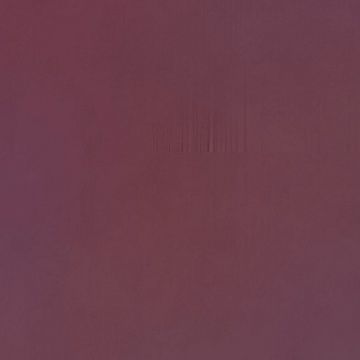
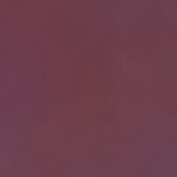
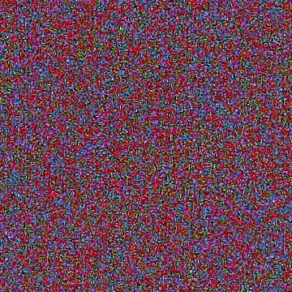
✨ 디테일 (글씨·모서리)
마트 지하주차장 · ISO 1600 · 샤픈 (⑥ 기준) + 노이즈 그대로 샤픈

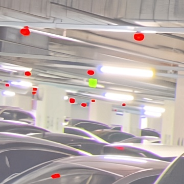
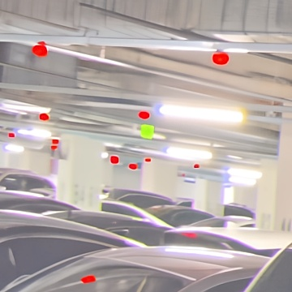
📷 호텔 로비 · ISO 2200
4924×7378 · 장당 시간(초): 현상+톤 47.8 · LibRaw 62.6 · 색 2.2 · AI 47.7
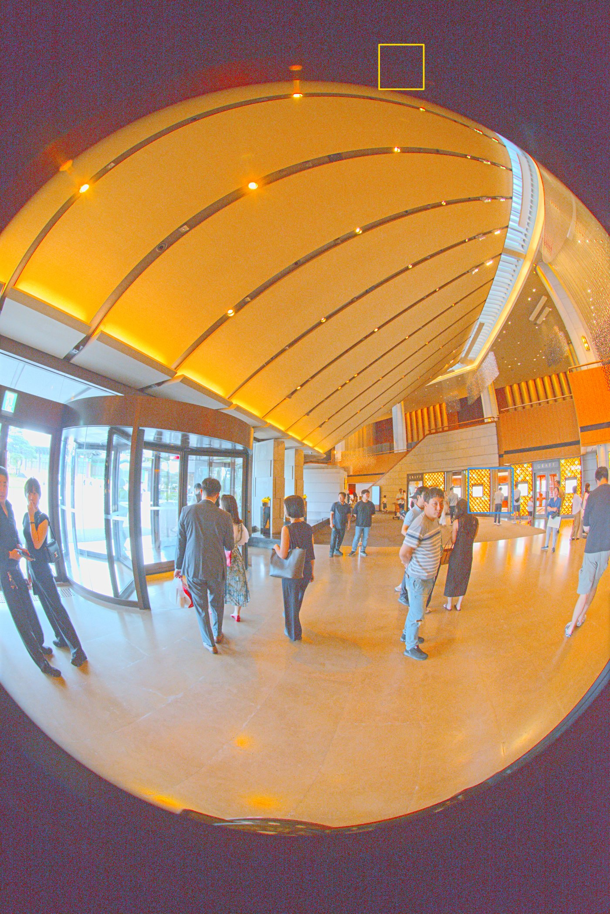
노란 상자 = 어두운 곳(노이즈) · 파란 상자 = 디테일(글씨·모서리) — 다음 장부터 100% 확대 비교
🔇 어두운 곳 (노이즈)
호텔 로비 · ISO 2200 · 노이즈 6가지
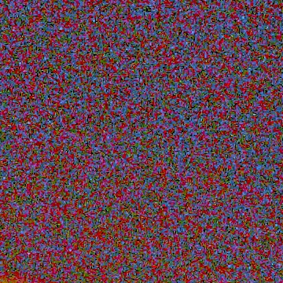
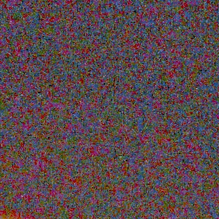
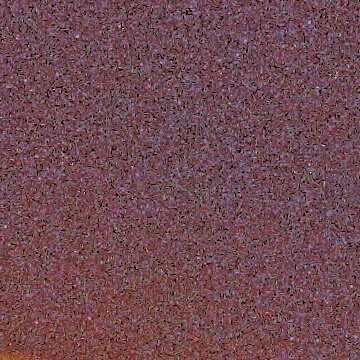

🔇 디테일 (글씨·모서리)
호텔 로비 · ISO 2200 · 노이즈 6가지
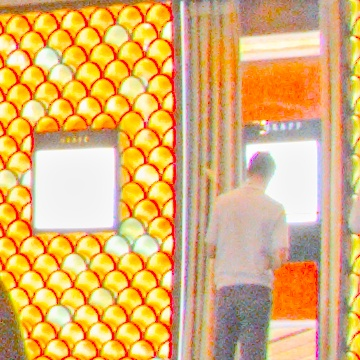
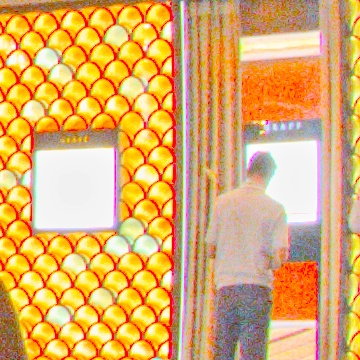

✨ 어두운 곳 (노이즈)
호텔 로비 · ISO 2200 · 샤픈 (⑥ 기준) + 노이즈 그대로 샤픈
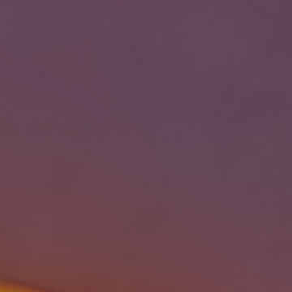
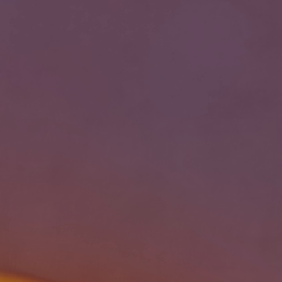
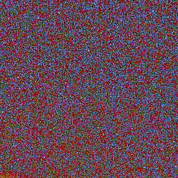
✨ 디테일 (글씨·모서리)
호텔 로비 · ISO 2200 · 샤픈 (⑥ 기준) + 노이즈 그대로 샤픈
정리 · 제안
| 어두운 곳의 굵은 색 얼룩 | ④ 🎨 색·굵은 입자 — 2초, 밝은 간판 색은 그대로. 「녹이는 느낌」 기본값 후보 |
| 밝기 알갱이까지 깨끗하게 | ⑤/⑥ 🤖 AI — 제일 깨끗하지만 장당 ~48초, 평평한 벽이 매끈해짐(질감 줄어듦) |
| LibRaw | 효과가 작아 단독으론 부족 — 「가볍게」 선택지 정도 |
| 마지막 샤픈 | 노이즈를 걷은 뒤 + 마스킹(경계에만)이 안전. 노이즈 그대로 샤픈하면 알갱이가 커짐 |
작업실 ② 톤·색에 넣을 안: 🔇 끔 / LibRaw / 🎨 색(세기·입자 굵기) / 🤖 AI(세기) / 🤖+🎨 · ISO 로 추천값 ·
확대 전/후 비교 — 마지막 ⑦ 타일 전 ✨ 샤픈(양·반경·마스킹, 밝기에만)
어느 방식을 기본으로 둘지 · AI 를 기본 켬으로 할지(시간) 골라주면 그대로 붙일게